Plan UI review: desktop and phone
Batch 1 of the 13 October 2026 phone live test is at the top of the phone sections: decisions 110 to 119 (the UAT grid, the ribbon swap, the lift and the tear). Batch 2 follows. Revised 12 October 2026 after the owner's voice review. Nothing here is built in Kitchie. Decisions 85 to 109 are mostly owner-stated, 12 Oct 2026; where he was unclear they are marked ambiguous and listed as open questions, not guessed. Written notes: plan-ui-review.md. Earlier decisions 63 to 84 are still proposals. Latest (late 12 Oct): 107 the day and its detail dock as one stack, 108 closing or dragging the tile brings the week back, 109 Clear week next to Copy last week. See the stack and Clear week.
- The "bulb" icon top right
- That is Plan settings. It was drawn like a sun, so it looked like a bulb. It is now a plain gear and is labelled. The page's real top-right controls are Copy last week, Plan settings, and (phone) the Mine dropdown.
- The Options button, bottom of the page
- It is now called Mockup options. It is only for this review: it switches the variants below live. It is not part of the app.
- "Bottom sheet, two stops"
- On the phone, tapping a meal can open its detail as a sheet that slides up from the bottom. "Two stops" means it can rest at two heights: half (the meal card still visible above) and full. It is now only the comparison option; the default is now the stack (decision 107): the day card docks at the top and the detail at the bottom, one locked unit. See it: phone, sheet.
- Why the pictures were missing
- A rule in the repo (
.gitignore, lineshots/) kept the whole screenshots folder out of git, so the images were never published. They now live inimg/and load.
You had not seen these. They are still drawn, with their own page: open the four options A to D.
A Week board + docked inspector
Seven day columns and the inspector docked on the right. Superseded in part: the review's board (below) is this layout, with the new ribbon, dropdown filter and Ask AI.

B Agenda + detail pane
A day-by-day list on the left and the meal detail pane on the right. Superseded in part: the review's agenda rows are this layout.

C Week strip + focused day + Pantry flyout
A strip of seven day tabs, one day large, the detail as a Pantry-style flyout. Superseded in part: the day strip is now the continuous ribbon; "Day focus" here is its descendant.

D Cook sheet
An ingredients-by-day grid with use first and to buy groups. Not superseded: nothing in the review replaces it; the "full, cook sheet" phone idea is the one you did not want to lock.

What the new work supersedes in A to D: the prev and next week arrows (now the ribbon), the always-open person chips (now a dropdown), the "Open your assistant" button (now Ask AI on the night), the dashed empty box, and icon-only chips. Their layouts are the review's layouts below.
Phone: a continuous three-week day ribbon with the gliding marker; a compact header (week label with Last, This or Next week, Mine dropdown, copy, gear) that shrinks on scroll; Open night as quiet text with Ask AI and Surprise me; Not cooking hidden with an edge peek; meal detail as one locked stack (the day card docked under the ribbon, the detail docked at the bottom; decision 107); closing it or dragging the tile out brings the week back (108); Copy last week and Clear week in a Week actions menu with an Undo that names its action (109); undo on the changed day; labelled status chips.
Desktop: as before (board from 1760 px, agenda rows below, docked inspector) with the same ribbon, dropdown filter, Ask AI, slim Not cooking, Copy last week and Clear week side by side, each flipping in place to "Undo copy" or "Undo clear".
Older screenshots: those of the stack, week, swap, sequence, undo, dock and status options were regenerated on 13 Oct (batch 2). The clear week, curtain, filter, carry, picker, tear, lift, ribbon and read-only screenshots are from earlier batches and may still show the status chips or the old open night; the pages are the source of truth.
In both pages the Mockup options button switches every variant live (bottom right on phone, bottom left on desktop). The theme picker (bottom right of this page) switches dark and light.
Day ribbon default
owner-stated Scroll day by day, not week by week. Three weeks: last (read only), this, next. "Week of" follows the day in focus. Today is filled; a Today pill appears when you are away from it. The soft rectangle glides as you scroll the agenda; tapping a day brings it into focus.


Ambiguous: three or four weeks?
Header: shrink or fixed
owner-stated top space is too expensive. Person filter collapsed, arrows gone. Proposal: the header shrinks to one line on scroll down and returns on scroll up (recommended) or stays fixed.
Open night and Not cooking default
owner-stated "Open night" is quiet text, nothing else, on the week (13 Oct, decision 125: tapping it now opens that day, where Ask AI, Surprise me and Not cooking are; before, it marked Not cooking and showed the buttons on every night). Ask AI and Surprise me are scoped to that night. Not cooking is hidden and peeks at the edge it scrolls past. No "Open your assistant" and no floating assistant button.

Ask AI to plan this (curtain) not locked
owner-stated when everything in view is empty or Not cooking, a curtain drops under the ribbon and dismisses on any touch. Two trigger variants: start (the first three nights of the week are empty, immediate, default) and idle (whole week empty, after 5 s).

Who filter and people count
owner-stated the filter collapses into a dropdown. Options for the "Everyone" part: one dropdown (default), segment plus People dropdown, or the old chips behind a chevron. Ambiguous: he also said the number-of-people control should be a dropdown: the meal detail has a stepper or a dropdown.

Read-only plans
owner-stated other members' plans are always read only; Copy is disabled and a line says so.

Copy forward and in hand default
owner-stated a past day is read only. Swipe right on a past meal (or use its menu): pick a date, then the meal is in your hand until you tap a day to drop it. All days show while carrying, including Not cooking. Dropping on Not cooking makes it a cooking day; dropping on a meal replaces it and says "Replaced ..." with a pulse on that day. Ambiguous: start of the day or week for where it lands.


The shell is Kitchie UAT's calendar grid 110
owner-stated, 13 Oct 2026 "the current UI [UAT] is better than what you're showing me now"; "get the stencil of that calendar from UAT". One row per day: a narrow left gutter with the weekday and the date, the day's meals beside it, a solid line between days. Verified, not derived: read from Kitchie uat (web-plan.ts and plan.js); the class names are UAT's (.pw-day, .pw-dn, .pw-stack). The ribbon, the docked detail, swipe and inline undo stay. Proposal: Today in the gutter (111). Card faces are still the mockup's; the differences are listed in the note.
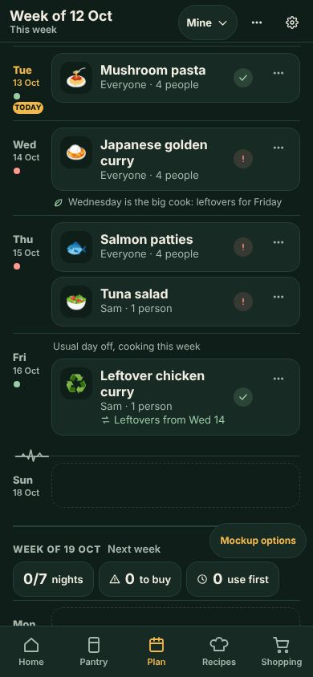
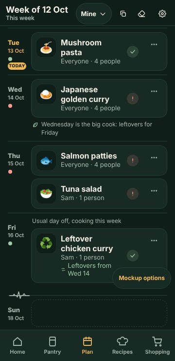
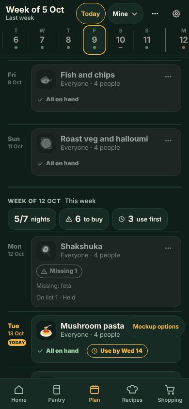
Ribbon: week gap, pipes, grey past 112 to 114
owner-stated A bigger gap between Sunday and Monday; the divider pipes stay visible when a day is selected; past dates stay grey and the past tiles go grey too. Drawn: a 22 px spacer with a strong pipe at the week boundary, a faint pipe between every day (Proposal, open: only the boundary?), the marker inset so the pipes show beside it, and greyscale past tiles.
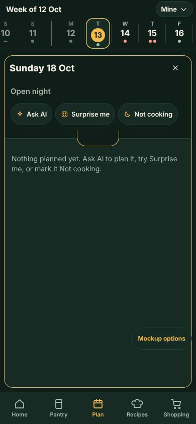
Tap another day: the contents swap, the slot stays 115, 116
owner-stated "keep the detail view in place; it's just that a different day's plan replaces it." The ribbon stays docked and live; a tap swaps only what is in the stack (a day with meals, an open night, Not cooking, a past day). Closing by x, Esc, swipe down or the handle, and dragging the tile out, still return to the week (108). Revises 108 for ribbon taps only. Empty-day states are Proposal.

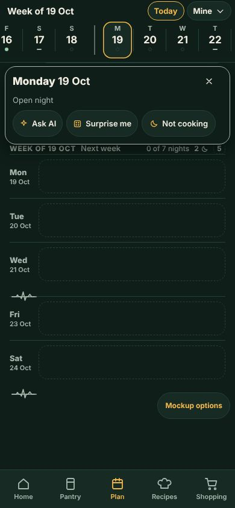
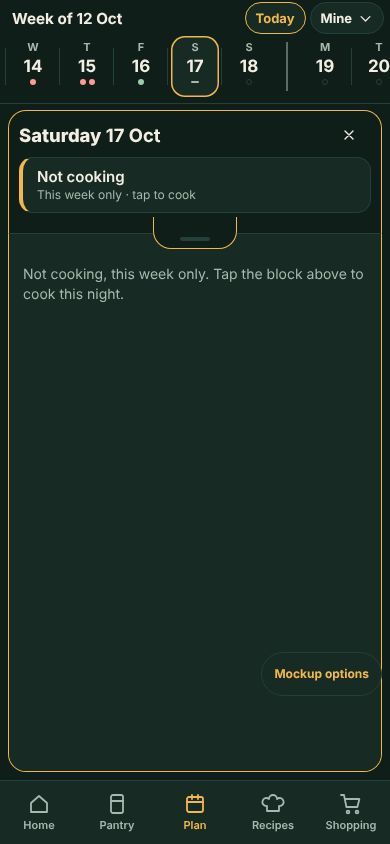
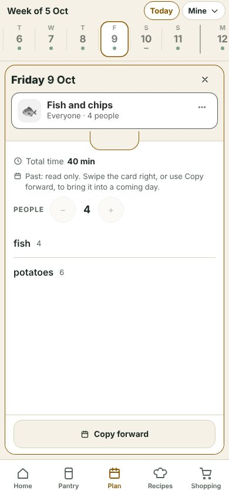
Lift on every tile, and the torn edge 117, 118
owner-stated The lift seen when a tile is picked up in detail also applies to tiles in the plain week: press and it rises and casts a shadow (Proposal: 2 px, 2.5 per cent). The tear: "two bits of paper, a rugged edge, like it's being torn off." The tile in hand and the dashed piece left behind get matching ragged edges (Proposal: a generated clip-path polygon, no assets; teeth grow over the first 36 px; reduced motion shows them at once). The opacity fade and the tilt stay.
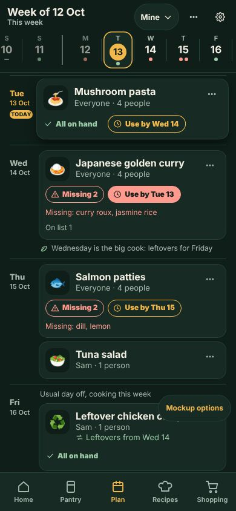
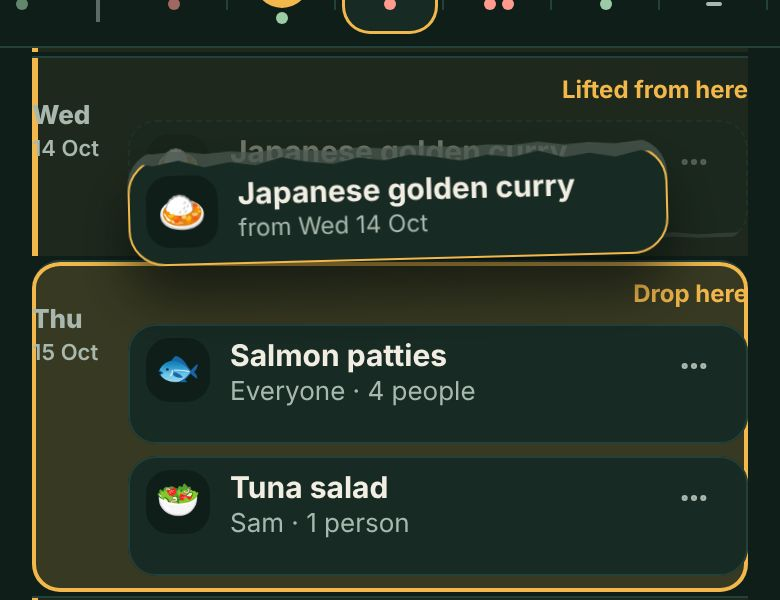
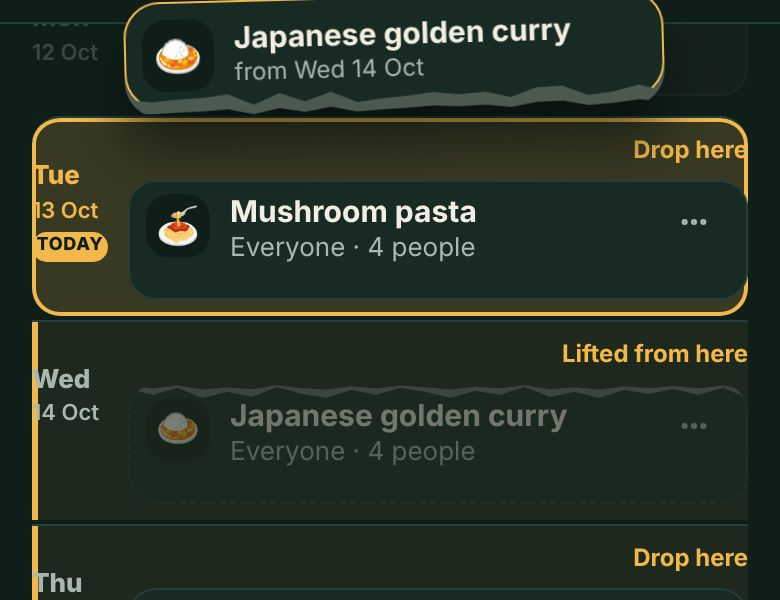
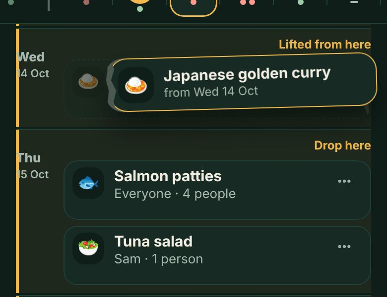
Kept as they were 119
owner-stated Left and right swipe; inline undo (the button flips in place, no toast); the docked in-frame detail under the ribbon; the opacity fade as a tile drags out; the tilt of the dragged tile; the Surprise me drop and suggestion.
Open (batch 1)
- Pipes: every day (drawn) or only the week boundary.
- Card face: UAT's photo thumbnail and avatar, or the mockup's emoji tile and status chips.
- Today pill in the gutter, or colour only.
- Swap in the other detail variants (only the stack swaps).
- After Not cooking from the docked detail: close to the week (drawn) or stay docked.
- Tear on a sideways drag, and on the swipe.
Day on top, detail at the bottom default
owner-stated, 12 Oct 2026 "When the user clicks a given day with meal, that day docks to the top and the sheet like idea docks to the bottom but still continues one vertical puzzle locked together." Drawn as two pieces with a shared edge and a tongue that fits into the detail like a puzzle piece: the day card (heading, the meal tile) is pinned directly under the ribbon; the detail fills the rest down to the nav. No gap, no overlay, no other days. The tongue is the handle. Open it with ?sel=wed-curry.
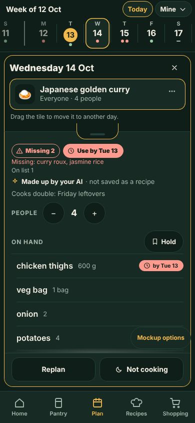
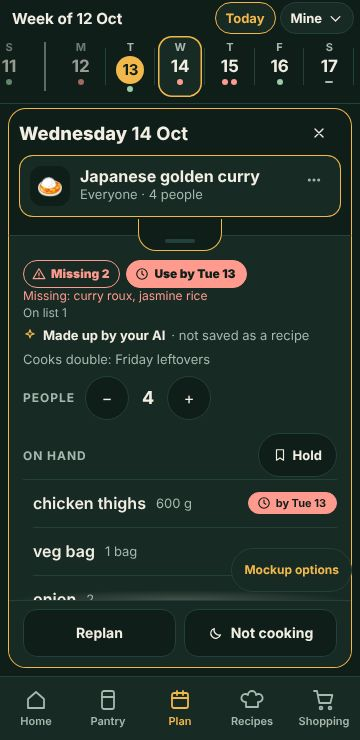
A long ingredient list
The day card stays pinned; only the detail scrolls inside the height that is left, with a soft shadow at the edges of the scroll area and Hold and Add pinned at the bottom (13 Oct; Replan and Not cooking moved into the ... menu). A day with two meals shows the second as one quiet line ("Also") so the detail keeps its height. Right: 21 ingredient lines, scrolled.

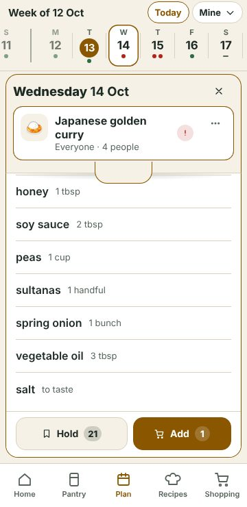
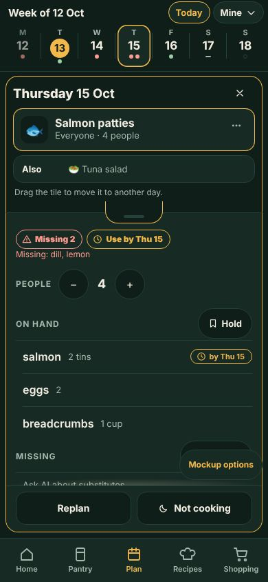
Tight on a short phone: at 360 x 640 the detail window is about two lines before scrolling.
Back to the week: close, or start dragging 108
owner-stated, 12 Oct 2026 "When the user either closes the sheet view or starts dragging the recipe tile then the week plan view kicks back in." (a) Close: the x, Esc, the handle dragged down, or a swipe down on the detail (at the top of its scroll) bring the week back, scrolled to that day. (b) Drag the tile (about 8 px, mouse or finger): the week is back immediately under the finger and compact (chips hidden so all days fit), the tile is in hand, and every day is a drop target, including a hidden Not cooking day (Sat). Dropping on a meal replaces it, on Not cooking makes it a cooking day (decision 102); a drop outside a day, Esc or a cancel moves nothing. Edge of the screen scrolls the week while you drag. Keyboard and menu: "Move to another day" in the card menu (same hand-in-the-air flow as copy forward).
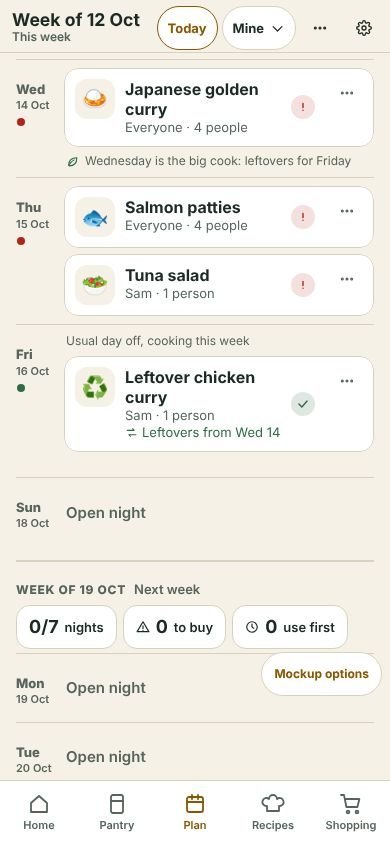
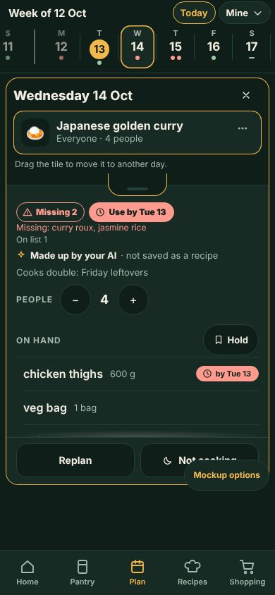
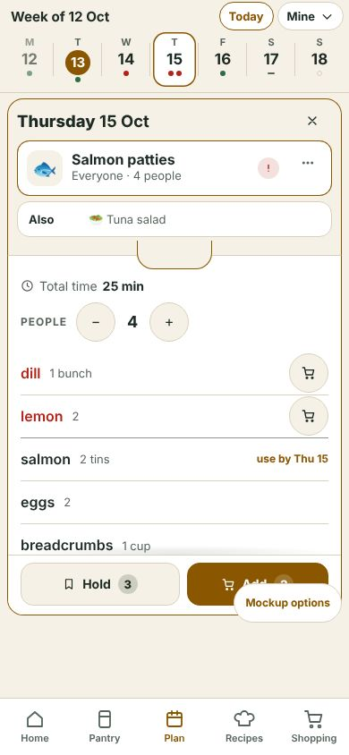
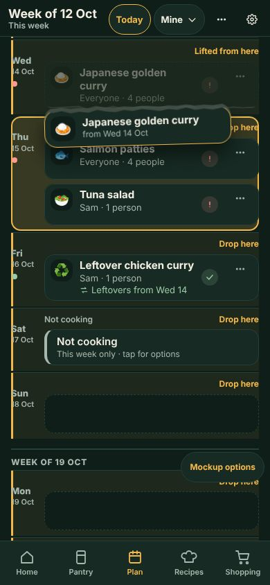
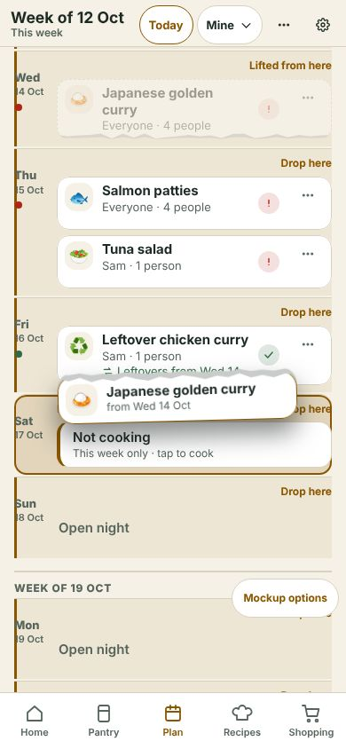
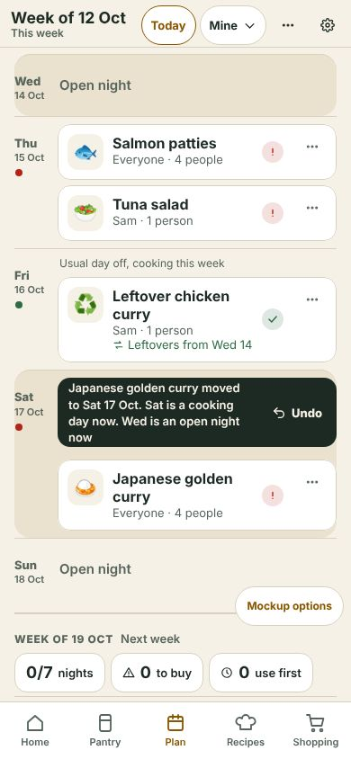
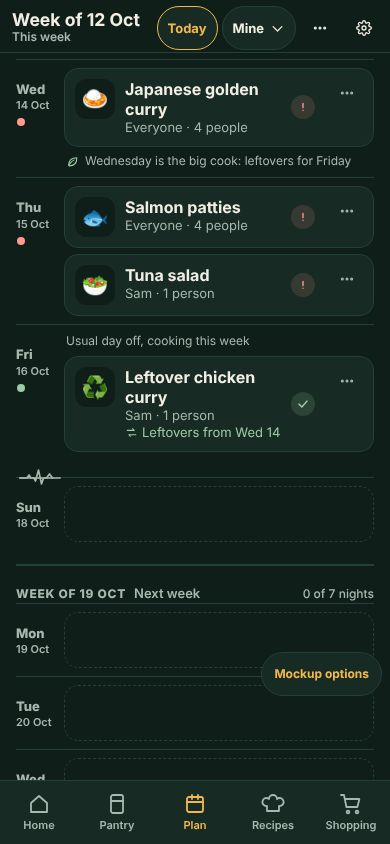
Earlier detail options, kept 103
Decision 107 refines 103 and becomes the default. The earlier variants are still in Mockup options: docked inline with neighbours peeking, with other days as one line each, with other days hidden, and the two-stop bottom sheet (comparison).


Desktop: two buttons side by side default
owner-stated, 12 Oct 2026 "Next to copy last week is clear the week icon, like copy last week, clear also can be undone by clicking again (the in place transformed button)." Icon: an eraser, not a bin (a bin says deleted for good). After use the button flips in place into Undo clear (curly arrow, Z); Copy flips into Undo copy the same way. At 1024 both are icon buttons with a tooltip; the label returns at 1280.
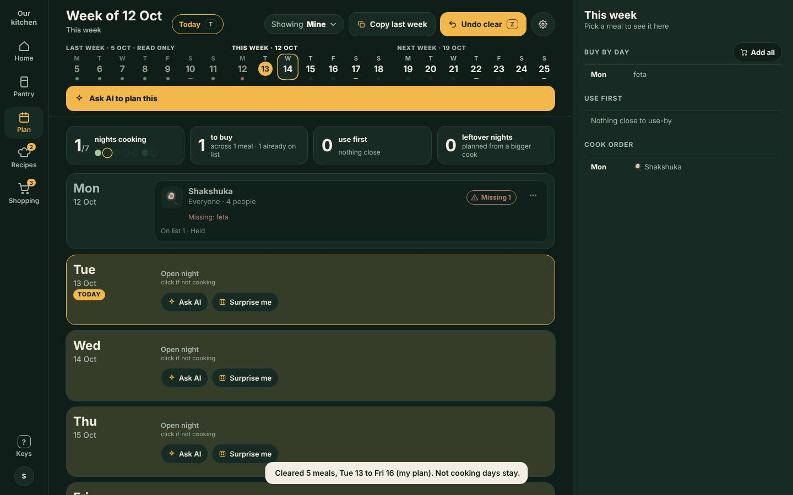
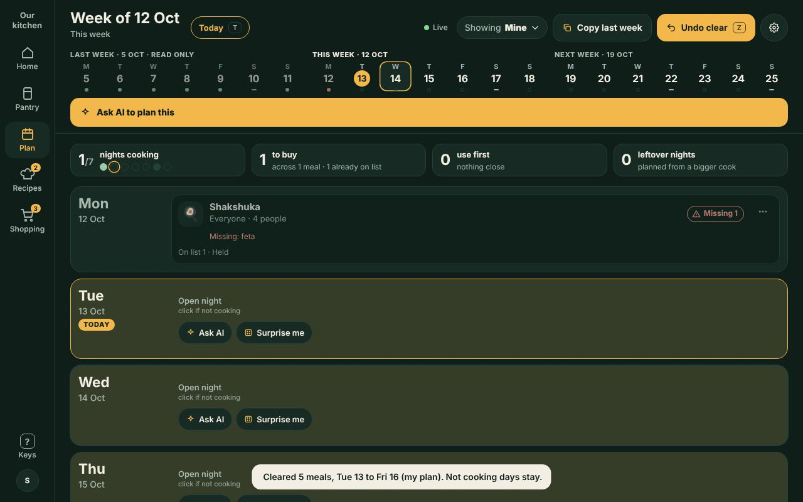
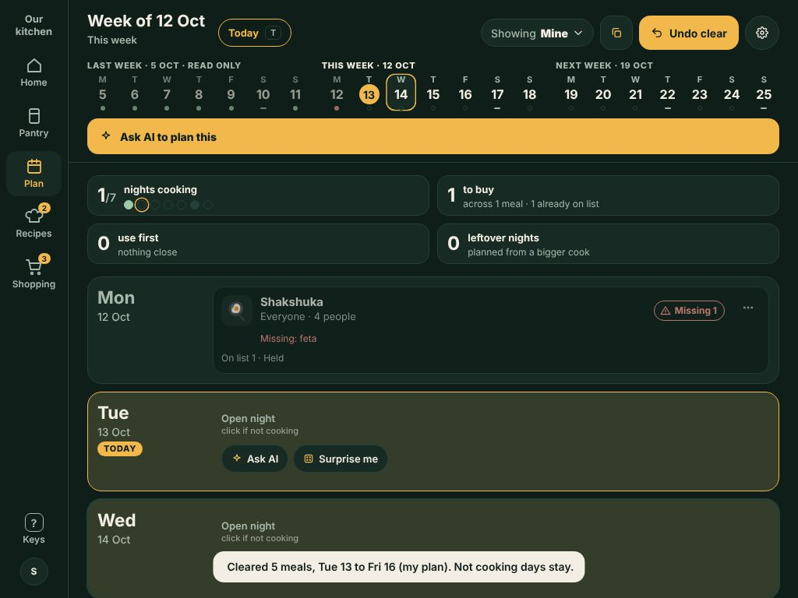
Phone placement 1: Week actions menu recommended
The header stays slim: where Copy was there is one "Week actions" button. It opens a small menu with Copy last week and Clear week, each with the scope in words ("Removes 5 meals from today on in my plan. Not cooking days stay. Includes 3 household meals") and the reason when it is disabled. After either action the button splits: an accent pill "Undo clear" (or "Undo copy") with the menu button still next to it, so a second action stays reachable (clear, then copy).
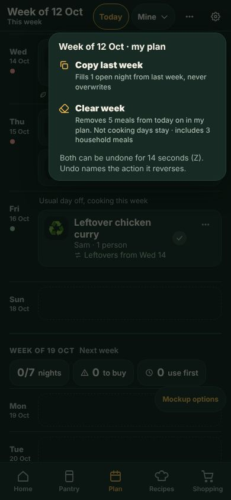
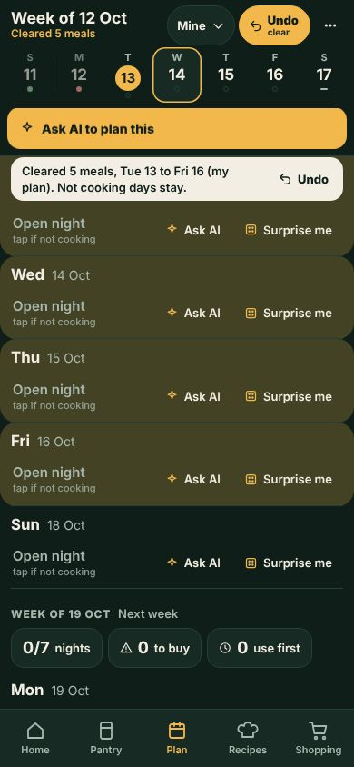
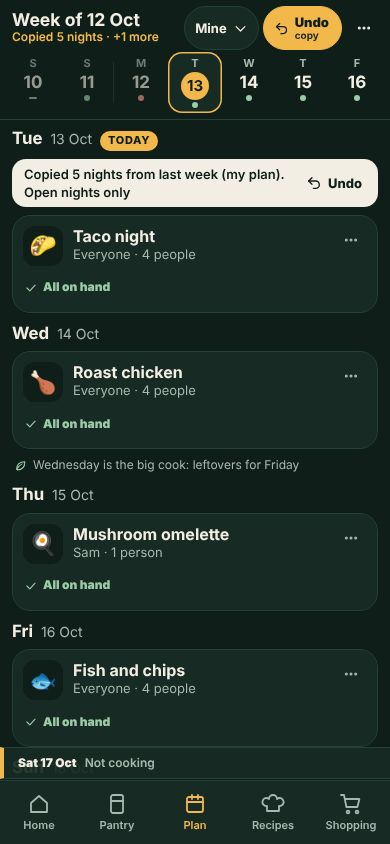
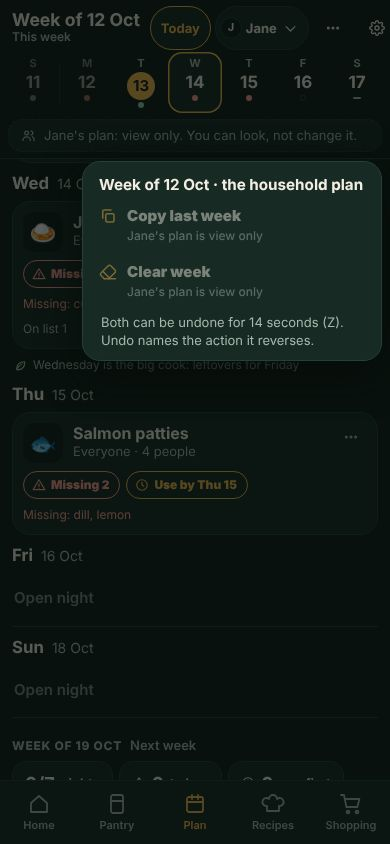
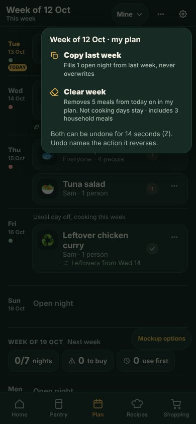
Phone placement 2: two icon buttons
Literally next to each other in the header, each flipping in place. It works on a wide phone but there is no room for Plan settings while the Today pill shows (it hides then, and Mine loses its chevron at 360); icons have no tooltip on touch, so the word "clear" is missing until it flips. That is why it is not recommended.
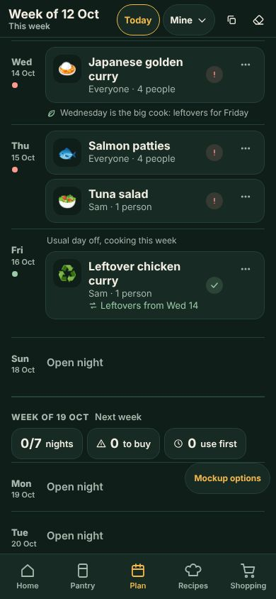
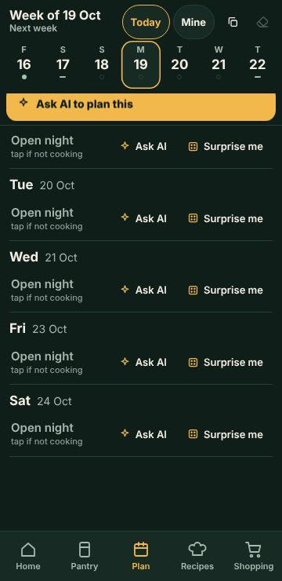
Rules, and what is not decided
- Scope: the active pill's own plan for the selected week. Other members' plans are read only: disabled, with the reason. Past weeks are read only: disabled. Past nights are read only: it clears from today on (Mon 12 stays).
- Not cooking: recommended default keeps the marks (a day off is a decision, not a meal;
?cl=allshows the other way). A "usual day off" is a rule and always stays. - Undo names its action ("Undo clear", "Undo copy") and lasts 14 s. Clear then Copy: recommended is a short stack: the latest action shows Undo; undo it and the earlier one shows Undo again (+1 more is shown). One level versus a stack is an open question.
- No confirm (Undo is one tap), but never silent: the first cleared day says what went and pulses. On Mine, household meals I eat are cleared too (same set Copy last week uses); alternative in the open questions.
Plain red or green 121, 122
owner-stated, 13 Oct 2026 "green means it's been dealt with"; "when I add something to shopping, I know that number in the shopping means it's something that has to be bought, so I don't need the additional count." No "Missing N", no chips, no red alarm: one small signal on the tile, the same rule in the gutter under each date and in the ribbon dots, and no pills at the top of the detail. Supersedes the four options of 104 (kept below as rejected). Proposal: green = every missing item is already on the shopping list (dealt with); ?gr=hand shows the other reading, green only when all is on hand. Open.
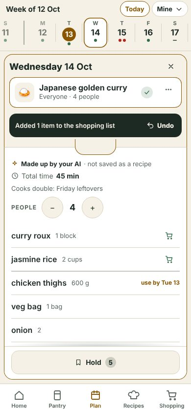
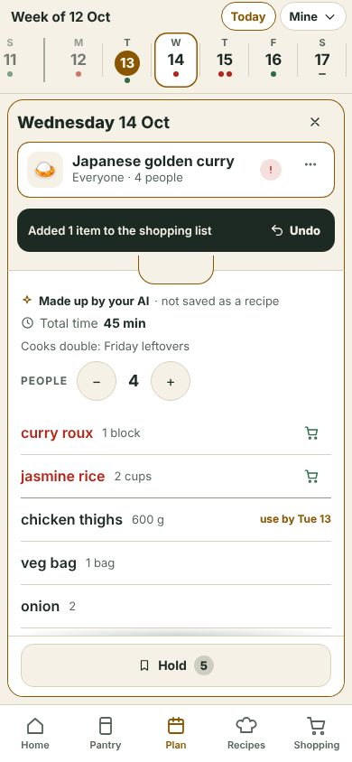
One ingredient list, Hold and Add 123, 126
owner-stated, 13 Oct 2026 "rather than the split of on hand and missing, I just want to see the missing ingredient in red at the top." One list, missing first as plain red text, on hand after; no headings, boxes or pills. The bottom of the detail is Hold with a number and a cart Add with a number ("why do I need not cooking and replan in the detail?"). Proposal: each number is how many items the button will touch. No missing, no Add. Past: Copy forward only.
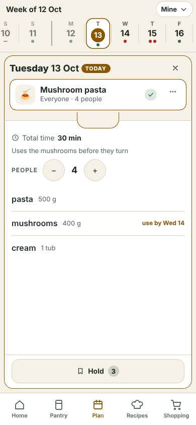
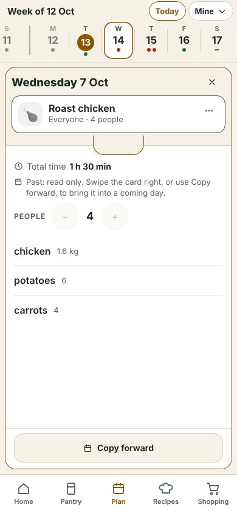
Open night, and its own day 125
owner-stated, 13 Oct 2026 "when I click an empty day, I don't mind then seeing Ask AI and Surprise me show up." The week shows only "Open night". Tapping it opens that day: Ask AI, Surprise me and a Not cooking action. Revises 92 and 94. Open question.
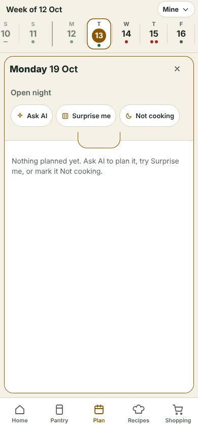
The ... menu, Open recipe 127
owner-stated, 13 Oct 2026 "I don't want your stuff in the bracket like swipe left, swipe right. People know how to do it." Open recipe (a real link to Recipes; a stub where the sample has no page), Replan, Move to another day, Not cooking. No Hold or Add missing, no brackets, no key badges.
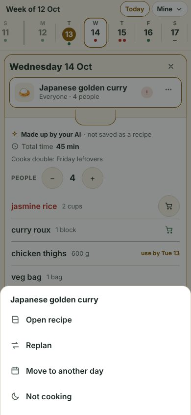
The grey bar on the tab 128
owner-stated "that lip is a distraction." Two drawn: removed (recommended, the tab itself stays the drag target; the x, Esc and a swipe down also close) or much lighter (?hdl=light).
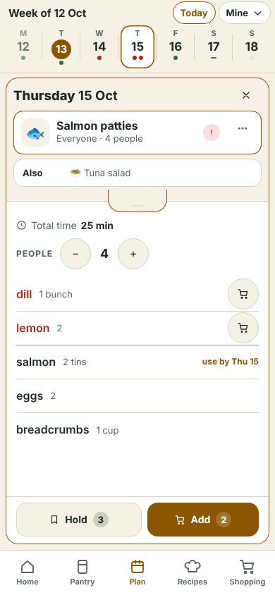
First-run wiggle, undo that expires, total time 124, 129, 130
The "Drag the tile" line is gone; the tile wiggles on the first 3 opens within 7 days and never after a first drag (recommended rule; ?jig=1 forces it, ?jig=reset clears it). Every in-place Undo expires after 14 s (?ut=4 shortens it). One Total time on every meal, past ones too.


Week board + docked inspector recommended
Seven columns from 1760 px; the 21-day ribbon with week labels replaces the arrows; one "Showing Mine" dropdown in the title row; Ask AI and Surprise me on open nights; Copy last week flips to Undo.


Other desktop options (unchanged)
Layout 3 Day focus, inspector flyout, open night slim row, filter variants: all in Mockup options. Widths: 1024 agenda, 1280 agenda, 1440 docked, 1920 board.


owner-confirmed It looks at timing. Earlier in the week, or when there is room to shop, it may suggest something new and may use items already on the shopping list or already being bought for planned meals. Late in the week, or when you are mostly eating from what is in the house, it favours using up on-hand stock. It never repeats a recent meal. Mock thresholds (proposal): on-hand if the night is today, tomorrow or Fri to Sun of this week; otherwise new; recent means any planned meal within 7 days.
Full wording and the open questions are in plan-ui-review.md. Cite them as "Plan UI review 85" because item-edit-flyout.md reuses the same numbers.
- owner Continuous day ribbon replaces week jumps.
- owner 110 The shell is rebuilt on Kitchie UAT's calendar grid (gutter, day rows); verified from the
uatbranch. Card faces differ (listed). - 111 Proposal: Today and past marks in the gutter.
- owner 112 A bigger gap between Sunday and Monday (ribbon; the agenda part is a Proposal).
- owner 113 Divider pipes stay visible when a day is selected. Proposal: a faint pipe between every day.
- owner 114 Past dates stay grey, and past tiles are grey too.
- owner 115 With a detail open, a ribbon tap swaps the contents and the slot stays (revises 108 for ribbon taps only).
- 116 Proposal: the slot's states for an open night, Not cooking and a past day; stack only.
- owner 117 The tile lift on every tile in the week. Proposal: the values.
- owner 118 A torn-paper edge where a tile leaves the stack, the fade kept. Proposal: clip-path teeth.
- owner 119 Kept: swipe, inline undo, docked detail, the fade, the tilt, Surprise me.
- owner ambiguous Bounded: last, this, next week (he also said four weeks forward).
- owner "Week of" label follows the selected day; Last, This, Next week shown; no fortnight wording.
- owner Today highlighted; jump to today shortcut.
- owner Soft selection marker kept; tapping a day brings it into focus.
- owner Top space: filter collapsed, arrows replaced, label compact.
- Proposal: header shrinks on scroll (recommended) or fixed.
- owner Open night wording; tap makes Not cooking; it hides once you move on.
- owner Not cooking hidden by default; peeks at the edge.
- owner Ask AI and Surprise me per night; Surprise me heuristics confirmed.
- owner "Ask AI" wording; no "Open your assistant", no floating or persistent assistant control.
- owner Not locked: "Ask AI to plan this" curtain, start or idle trigger.
- owner ambiguous Who filter collapses to a dropdown.
- owner ambiguous People count or "various people" as a dropdown.
- owner Copy last week: open days only, active pill, other members read only.
- owner Phone past is read only; swipe right copies forward; in-hand; all days show while carrying.
- owner Undo is mandatory; desktop Copy flips to Undo; phone has options, no snackbar. Proposal: on the changed day.
- owner Drop on Not cooking makes it cooking; drop on a meal replaces it, labelled, with a pulse. Ambiguous: start of day or week.
- owner Detail docks under the ribbon; what else shows is open (3 variants and the sheet).
- owner Missing and Use-by language not landed: four options. Proposal: (a).
- Proposal: desktop equivalents.
- Supersessions of 70, 71, 72, 79, 82, 83 and 68 default.
- owner 107 (refines 103) Phone: a day with a meal docks at the top, the detail at the bottom, one locked stack; default. Earlier variants kept as options.
- owner 108 Closing the stack, or starting to drag the tile, brings the week plan back; dragging shows the week under the finger with the tile in hand.
- owner 109 Clear week next to Copy last week; flips in place to Undo like Copy. Proposals: scope, placement, Undo naming, stack.
- Ambiguities (recorded, not guessed): three versus four weeks; the dropdown is the person filter, the people count, or both; where a dropped meal lands (verbatim "start of the day", then "week"); curtain trigger and whether it is locked.
- Still open from the first review: which desktop layout (A to D, board, agenda, focus); fill the window or left-anchored; Esc closing a flyout; leftover link as real data; board only from 1760 px.
- Picks needed: undo pattern, status option (a to d), header shrink or fixed. (Phone detail variant: 107 makes the stack the default; the others stay as options.)
- New, batch 1 of 13 Oct (110 to 119, recorded, not guessed): pipes between every day or only the week boundary; the card face (UAT's thumbnail and avatar or the mockup's emoji tile and status chips); the Today pill in the gutter; whether the other detail variants should swap too; what happens after Not cooking from the docked detail; the tear on a sideways drag and on the swipe. Cost of each wrong guess: low, CSS or a few lines.
- New, 107 to 109 (recorded, not guessed): does Clear week keep Not cooking marks (recommended) or clear them; on Mine, does it clear household meals I eat (recommended, same as Copy) or only take me out of them; does it include today; Undo as one level or a short stack (recommended: stack, 14 s each); after a drag that lands nowhere, stay on the week (drawn) or reopen the stack; moving a big cook whose leftovers are linked (Wed curry, Fri leftovers) should the leftover follow; which phone placement for Clear week (menu recommended).
- Kitchie repository: reachable on 13 Oct (read only,
uatbranch). It is where the UAT grid in 110 was verified. No Kitchie issue was filed; the owner converts the pull request into issues.
- Sample data: members are invented (Sam, Jane, Kit, Arlo, Priya, Tom, Lee). Today in the sample is Tue 13 Oct; last week is Mon 5 to Sun 11, next week Mon 19 to Sun 25.
- What loads: phone.html: theme.css, phone.css, data.js, status.js, phone.js (about 130 KB uncompressed, up about 11 KB on 12 Oct; the tear polygons are built on the first drag, no images). desktop.html: theme.css, d.css, data.js, status.js, desktop.js plus only the matching size files (d-1024, d-1280, d-1440, d-1760, d-1920, d-short). No images and no fonts beyond the theme; the pictures on this page load lazily. Viewport code is only in the size files and phone.*.
- Pictures in
img/are quick looks (dark theme); the pages are the source of truth.